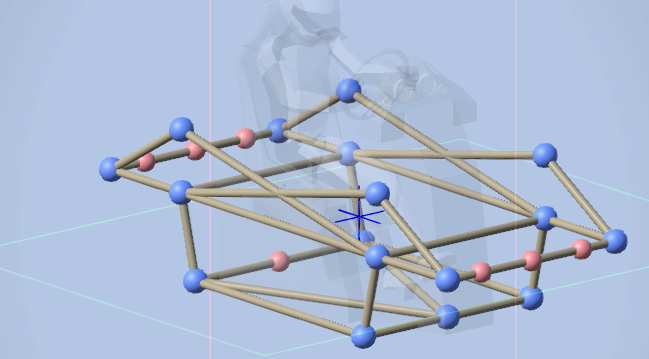
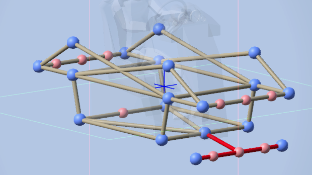
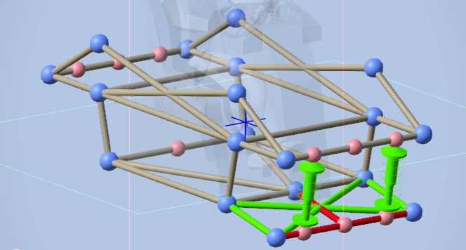
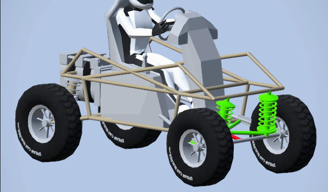
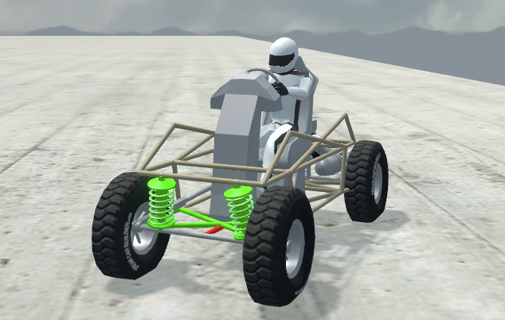

Live axle is very simple and is commonly used in trucks. It is simply 1 bar on a swivel attached to springs. This suspension takes the least parts and works well for what it is. Below is an example of what your frame should look like. I have hidden the crossbraces. The midpoints are important and will be used.

Start off by drawing a bar the width of your axle and add a midpoint in the middle. Use this midpoint to be the swivel that attaches to your chassis. What you need is in red.

Add your springs and connect them to the chassis. Reminder to adjust the springs for your car. After adding your springs, crossbrace the axle to stop it from sliding. What you need is in green.

Attach your wheels and engine and your done. Remember to add transmissions to the wheels aswell.

You can now see the suspension working and holding the car up. Without limiters a big bump will cause it to break.
